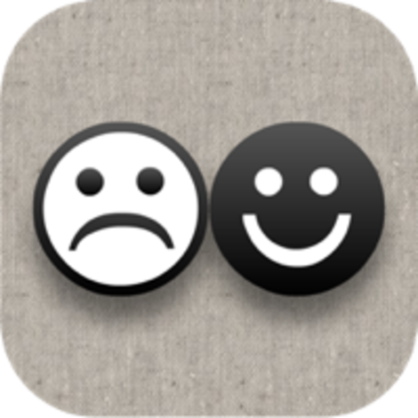

haranicle
へなちょこiOSプログラマー
Works
AlcatrazTour
Search Xcode plugins better!
This is an app which helps you to find Xcode plugins.
GitHubのAPIを叩いた結果をRealmに保存して、Realmでソートして表示しています。
AppStore
特殊文字キーボード
特殊文字を入力するためのキーボードアプリです。
特殊文字は、絵文字と違ってPCでも見ることができます。 つぶやきや、SNSでどんどんつかっちゃおう!
iOS8の新機能であるカスタムキーボードを実装しました。
リリースされたばかりのSwift1を使用して開発しました。
AppStore
えもスタンプ
えもスタンプはiOSのキュートな絵文字を画像に変換し、
文字化けを起こすことなくiOSじゃないスマートフォンやパソコンに送れるマーベラスなアプリです。
AppStore
QRコードリーダー
軽量で高速に動作するQRコード、バーコード読み取りアプリです。
11万DL突破
AppStore
特殊文字

とってもシンプルな特殊文字入力アプリです。
特殊文字は、絵文字と違ってPCでも見ることができます。
つぶやきや、SNSでどんどんつかっちゃおう!
AppStore 無料ランキング最高4位
AppStore ベスト新着アプリ
70万DL突破
6000文字以上の中から、好きな文字を素早く選べるようにUIを工夫しました。
AppStore
食べカメラ
食べカメラは写真を食べることができる魔法のようなアプリです。
使い方は簡単!食べる写真を選択(または撮影)して、タップするだけ!
写真から湯気を出して美味しそうに見せることもできるよ。
初めて作ったiOSアプリ。
AppStore